Common Minerals
| 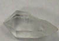 | 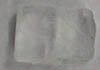 |  | 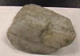 | |
SiO2 | NaCl | KAl2(AlSi3O10) (OH)2 | K(Mg,Fe)3 (AlSi3O10)(OH)2 | NaAlSi3O8 CaAlSi3O8 |
| 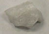 | 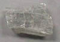 | 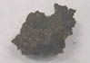 | 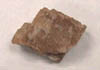 | |
SiO2 | CaSO4-2H2O | Fe2O3-n H2O | (Mg,Fe,Mn,Ca)3 (Al,Fe,Cr)2(SiO4)3 | KAlSi3O8 |
| 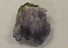 | 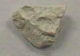 | 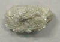 | 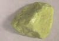 | |
SiO2(amethyst) | Al4(Si4O10(OH)8 | Mg3Si4O10)(OH)2 | S | PbS |
 | 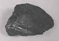 | 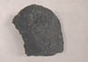 |  | 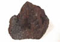 |
SiO2 | (Ca,Na)2,3(Mg,Fe, Al)5Si6(Si,Al)2O22 (OH)2 | Fe3O4 | Fe2S | Fe2O3 |
| 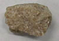 | 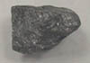 |
CaCO3 | C |
| Discussion and table of minerals |
| HyperPhysics***** Geophysics | R Nave |